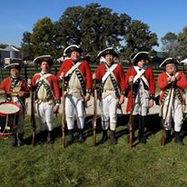
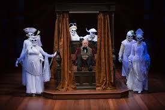
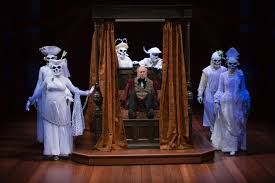

last year we ran a very successful play of the christmas carol by Charles Dickens and it is back by popular demand. See the panto style of the christmas carol. With christmas coming it at great time. We all run this in December and it popular so get your tickets now. We are running this more than once this year so check out the events page to see where else we are going to this year.
Homepage
We are a non for profit company that organises a range of different events in a range of different locations around the United Kingdom. Our tickets are really low price and all of our events can only be found on our page. All of our events are designed for all ages and are 'child safe'. Any profit generated is donated back into a charity.
We mainly work around North East England but we do go to South Scotland and Midlands of UK. Hopefully if there is an interest we can work further around the country.
We have a range of different events and arts that are upcoming. Click on the View Events link on top or click here to view what is coming up and also to book tickets to the events. Some our featured events for December are:
Battle Reenactment Group

The reenactment group is ran by the xy Regiment of hand which is a regiment that adds a humorous twist onto battles that happened in the past. We have a range of battles and wars include the: English civil war, wars of the Roses, Battle of Hastings and the American Civil War. These performances are suitable for all ages and are safe. They also have audience members joining in if they want. Meals can also be ordered so you have eat and enjoy the performance. Check the events page for more details.
The reenactment group is ran by the xy Regiment of hand which is a regiment that adds a humorous twist onto battles that happened in the past. We have a range of battles and wars include the: English civil war, wars of the Roses, Battle of Hastings and the American Civil War. These performances are suitable for all ages and are safe. They also have audience members joining in if they want. Meals can also be ordered so you have eat and enjoy the performance. Check the events page for more details.
Christmas Carol Play
 
